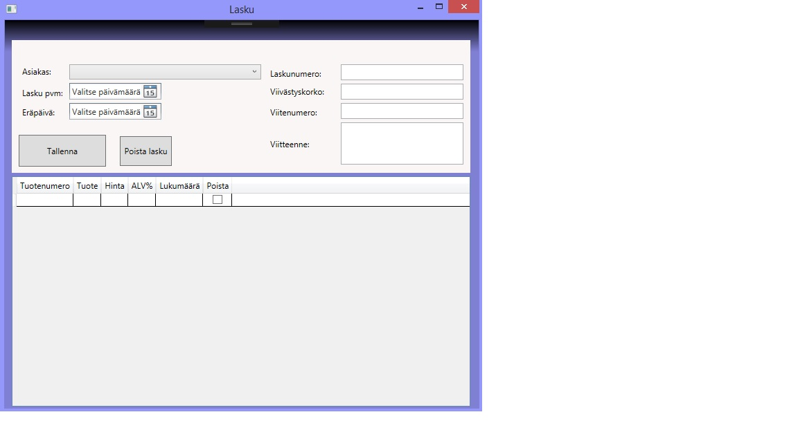

Sovelluksella on tarkoitus helpottaa pienten yritysten laskutusta. Pienissä yrityksissä on monesti vain yksi henkilö, kuka hoitaa myyntilaskutusta. Ohjelmassa on asiakas- ja tuoterekisteri ja sillä voi tehdä myyntilaskuja, jotka säilyvät ohjelmassa tallessa. Sovelluksessa ei ole tarpeen tunnistaa käyttäjiä.
Taustana tälle työlle on korvata vanha reikänen PHP ja MySQL -sovellus, jotta voidaan irtisanoa tietoturvaton web-hotellipalvelu. Lisäksi asiakas ei välttämättä tarvitse internet-yhteyttä ohjelman käyttöä varten.
Ohjelmaa tullaan käyttämään työpöytäsovelluksena ja se asennetaan toimimaan yhteen tietokoneeseen, mitä laskuja tekevä henkilö käyttää työpaikallaan.
Käytetyt teknologiat: WPF ja C#
Sovelluksen tietovarastona käytetään Microsoft Access-tietokantaa, mikä tulee samalle koneelle asennettuna kuin itse sovellus. Tietokannaksi valittiin Access, koska ei haluttu lähteä toteuttamaan turhan monimutkaista tietokantahallintaa. Eikä haluttu tallentaa tietoja minnekään internetissä olevalle palvelimelle, mikä altistaisi datan hakkeroitavaksi.
Tietokantaa varten pitää asentaa pari pakettia työasemalle:
1. Microsoft Access Database Engine 2010 Redistributable
Hae paketti...
2. 2007 Office System Driver: Data Connectivity Components
Hae paketti...
Taulut:
- Address: Osoitteet
- BillRow: Laskun tuottorivit
- Bills: Laskut
- Company: Yrityksen omat tiedot
- Customers: Asiakasrekisteri
- Products: Tuoterekisteri
Ohjelma lataa käynnistyessään tuotteet, asiakkaat, laskut ja omat tiedot tietokannasta.
Asiakasrekisteri:
Näkymässä voidaan tarkastella järjestelmään tallennettuja asiakkaita ja sortata sarakeotsikoiden mukaan sekä filtteroida tuloksia sukunimen perusteella. Lisäksi voidaan perustaa uusia, muokata (tuplaklikkaa asiakasriviä) ja poistaa olemassa olevia asiakkaita.
Tuoterekisteri:
Näkymässä voidaan tarkastella järjestelmään tallennettuja tuotteita ja sortata sarakeotsikoiden mukaan. Lisäksi voidaan perustaa uusia, muokata (tuplaklikkaa tuoteriviä) ja poistaa olemassa olevia tuotteita.
Myyntilaskut:
Näkymässä nähdään järjestelmään tallennetut laskut, joita voidaa sorttailla sarakeotsikoiden mukaan. Lisäksi näkymästä pääsee lisäämään laskuja painamalla Uusi lasku -painiketta tai muokkaamaan laskua tuplaklikkaamalla laskuriviä.
Uuden laskun perustaminen:
Näkymässä voidaan perustaa uusi lasku antamalla laskun perustiedot tai muokata olemassa olevaa laskua (yläosa) ja sitten lisätä laskulle tuottorivejä tai muokata olemassa olevien rivien tietoja. Laskulta voidaan myös poistaa rivejä valitsemalla checkboxeja. Näkymässä voidaa myös poistaalasku tarvittaessa.

Omat tiedot:
Näkymässä yritys voi tallentaa omat tietonsa esim. laskun tietoja varten.
Testausta on tehty vain käyttöliittymästä savutestaamalla toiminnot. Ei ole mitään kunnollista testausprosessia käyty läpi.
Puutteita:
- Laskun tulostustoiminto puuttuu vielä kokonaan.
- Laskulle viitenumeron generointi ja tarkastus.
- Laskulle oletustietojen mahdollistaminen per asiakas, ettei tarvitse aina samoja tietoja syöttää uudestaan.
- Combobox laskun tuoteriveille, jotta voidaan valita järjestelmään tallennettu tuote laskulle.
Koodin refaktrointi:
Koodia refaktoroimalla saisi varmasti tiputettua koodin määrää ja tehtyä yleiskäyttöisempiä komponentteja.
Käyttöliittymä:
Käyttöliittymän tulisi toimia samalla tavalla joka paikassa. Nyt asiakasrekisterissä ja tuoterekisterissä on lomake
listan oikealla puolella. Syynä tähän on kerättävien tietojen vähyys. Jos tulee enemmän kenttiä lomakkeille, niin
lomake on eriytettävä omalle ikkunalleen, kuten on laskun kanssa tehty. Listojen filtterointia on myös mahdollistettava
useampiin kenttiin.
Käyttäjätunnistus:
Järjestelmän tulisi tunnistaa käyttäjä, jotta voitaisiin jäljittää mitä kukakin on järjestelmässä tehnyt.
Tietokanta:
Tietokannan tulisi sijaita erillisellä palvelimella, johon client ottaa yhteyttä esim. Web API -rajapinnan kautta. Nyt tietokanta on samalla koneella
clientin kanssa. Samalla voitaisiin Access-tietokanta korvata jollain toisella tietokannalla, kuten MySQL:lla. Tällöin
voitaisiin toteuttaa tietokanta siten, että useat käyttäjäyritykset käyttäisivät samaa tietokantaa keskitetysti yhdestä
endpointista.
Automaatiotestaus:
Yksikkö- ja integraatiotestaus olisi hyvä toteuttaa automaattitestien avulla siten, että jos esim. johonkin luokkaan tulee muutos,
niin voidaan testit ajamalla validoida, että rikkooko tehty muutos jotain toiminnallisuutta.
Toteutin tämän harjoitustyön kokonaan yksin ja siihen meni ainakin 40 tuntia.